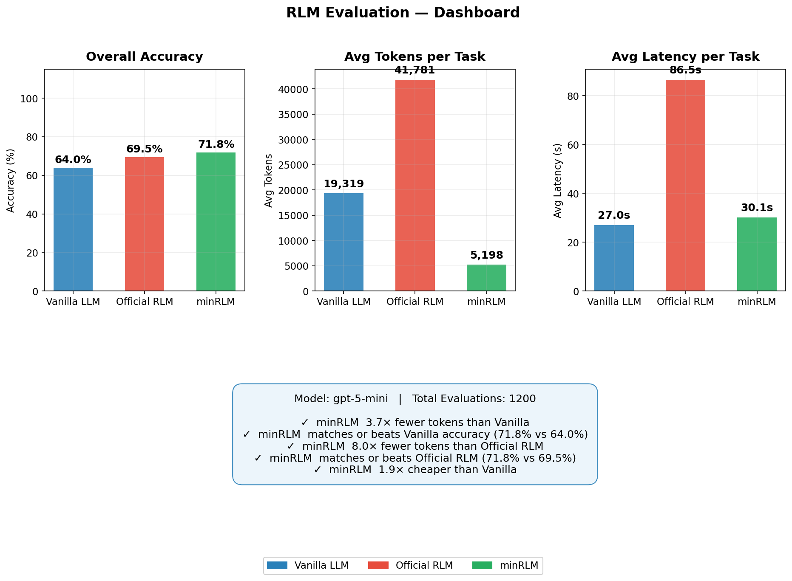
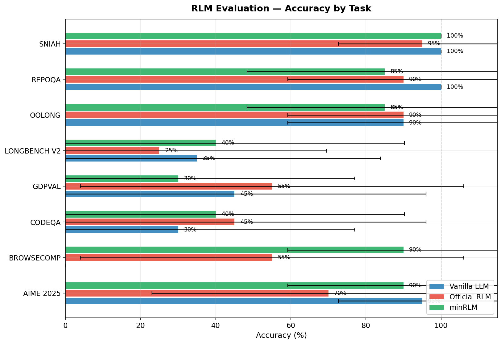
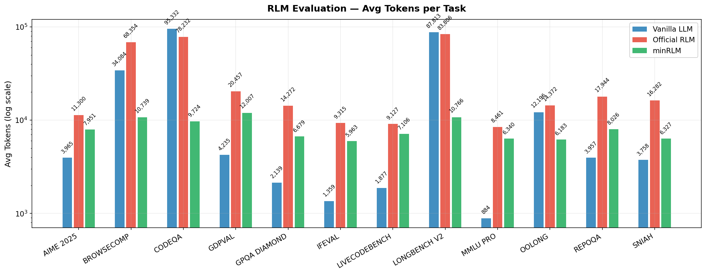
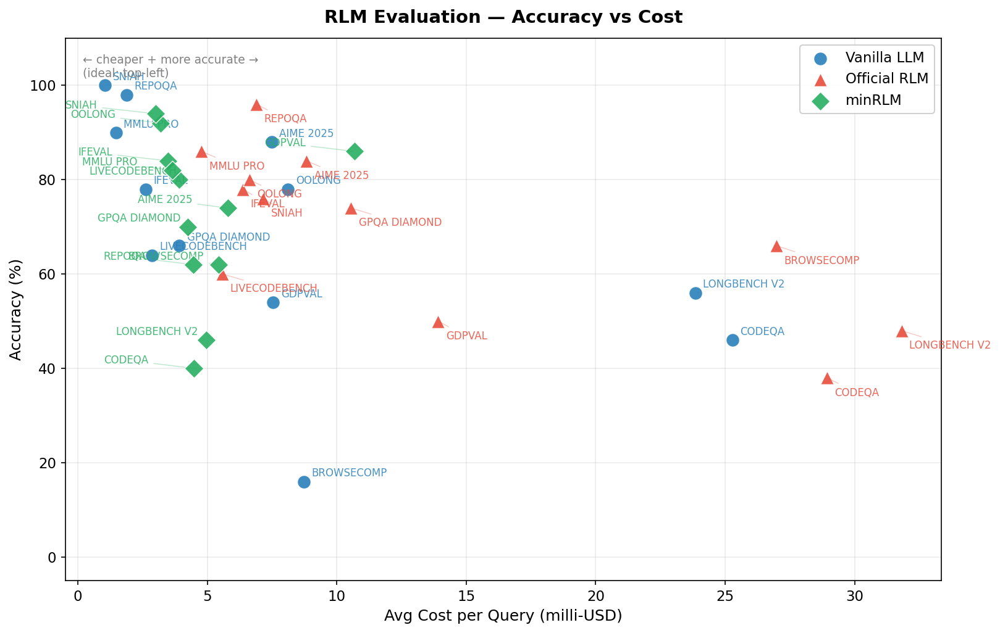
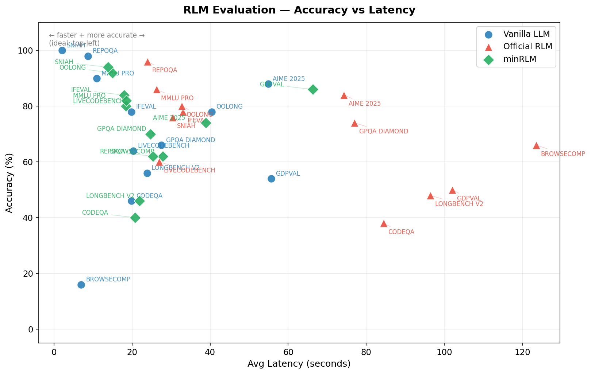
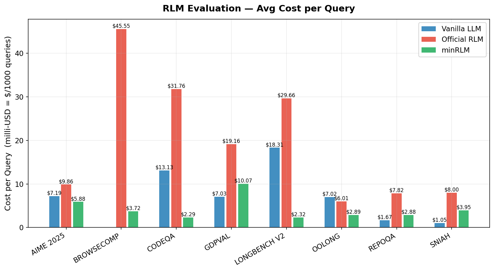
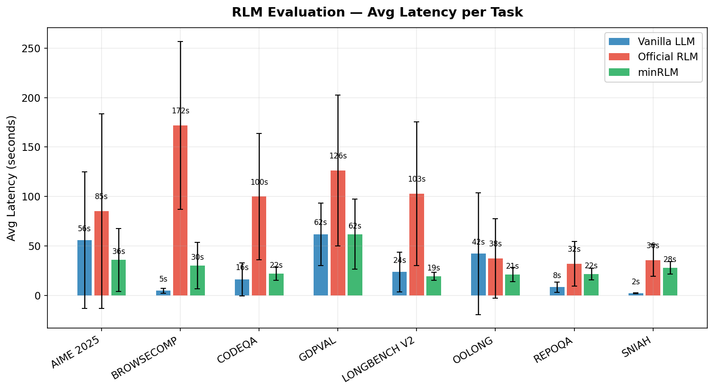
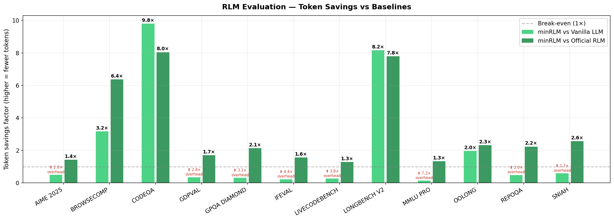

minRLM is a token and latency efficient implementation of Recursive Language Models, benchmarked across 12 tasks against a vanilla LLM and the reference implementation. On GPT-5-mini it scores 72.7% (vs 69.7% official, 69.5% vanilla) using 3.6× fewer tokens. On GPT-5.2 the gap grows to +30pp over vanilla, winning 11 of 12 tasks. The data never enters the prompt. The cost stays roughly flat regardless of context size. Every intermediate step is Python code you can read, rerun, and debug.
| Accuracy | Tokens/query | Cost | |
|---|---|---|---|
| minRLM | 72.7% | 8,151 | $2.86 |
| vanilla | 69.5% | 20,967 | $4.74 |
| official RLM | 69.7% | 29,327 | $7.92 |
| Accuracy | Tokens/query | Cost | |
|---|---|---|---|
| minRLM | 78.2% | 8,095 | $18.93 |
| vanilla | 48.2% | 14,196 | $16.50 |
| Accuracy | Tokens/query | Cost | |
|---|---|---|---|
| minRLM | 53.7% | 13,810 | $0.74 |
| vanilla | 63.2% | 18,136 | $1.16 |
| official RLM | 43.3% | 27,174 | $2.68 |
In December 2025, Zhang, Kraska, and Khattab proposed Recursive Language Models (RLMs): store input data as a variable in a Python REPL rather than pasting it into the context window. The model writes code to query the data; attention runs only on the results - search hits, filtered rows, extracted snippets. A 7M-character document becomes as accessible as a 7K one, navigated through code rather than read wholesale.
The original paper validated this on a few tasks. This post extends the evaluation to 12 tasks across 3 model sizes, describes a leaner inference loop, and reports accuracy, token usage, latency, and cost per query for everything. Code is open-source.
If you're already familiar with RLMs as a concept, feel free to skip to the implementation.
Using code execution instead of pure token generation for LLM reasoning has come up independently in several places.
smolagents (Hugging Face, 2024) proposed agents that write Python code at each step instead of selecting from a fixed tool schema. Both smolagents and RLMs treat the Python runtime as the model's interface. The difference: smolagents targets multi-tool orchestration; RLMs focus on a single REPL with data already loaded.
Anthropic's improved web search (2026) uses the same pattern in production: Claude writes and executes code to filter search results before presenting them - the same tradeoff RLMs make for local data, deployed at scale in a commercial product.
The Model Context Protocol (MCP) and the Universal Tool Calling Protocol standardize how models access code execution across providers, lowering the barrier to deploying RLM-style patterns in production.
Luo et al. (2025) show that LLM accuracy degrades as context length increases (context window rot) even when the answer is right there. Anyone who's used AI coding agents has seen this. Hennie de Harder (2025) has a good walkthrough of applying RLMs to work around it. RLMs sidestep this by design: the model never attends over the raw input.
ReAct (Yao et al., 2022) interleaves reasoning and action steps: think, act, observe, repeat. Each step appends to the conversation, so context grows linearly. The model picks from a fixed tool schema at each step. RLMs are narrower and cheaper: the data lives in a REPL variable, the model writes one block of Python code (not a multi-turn chain), and the result comes back in 1-2 iterations. No tool selection, no observation parsing, no growing context. ReAct is a general agent loop; an RLM is a single code-generation call with a sandbox.
Prime Intellect independently scaled RLMs and saw similar token efficiency gains on long-context tasks. @realmcore_ built an RLM specifically for coding tasks, showing the pattern works beyond the retrieval and analytics tasks in the original paper.
The reference implementation appends code and output to the conversation each iteration, so context grows with every step. minRLM does it differently:
zlib. The context is split into 20 sections, each scored by
compression ratio at 500-char resolution. Sections with high entropy (unique, diverse content)
get flagged as spikes. This map is injected into the system prompt so the model knows
where to search before writing a single line of code. A needle in a 7MB haystack
shows up as an entropy spike - the model can skip straight to it.sub_llm and falls back to the closest pattern.# REASONING: comment before code generation.
Helps on tasks that need planning (multi-hop retrieval, complex codebases).
from minrlm import RLM gives you the reasoning variant by default.search(), then passes it to a focused
sub_llm(task, evidence) call. The sub-LLM reasons over a small, relevant context
instead of the full input. For structured data, regex counting replaces LLM "reading" entirely.exec by default.from minrlm import RLM
client = RLM(model="gpt-5-mini")
answer = client.completion(
task="Which user had the most errors in the last 7 days?",
context=open("huge_log_file.txt").read() # can be 10MB+
)
# Data never enters the prompt. Token cost stays flat regardless of context size.
Instead of attending over 400K characters, the model reads the entropy map ("section 14 has a spike"),
checks the preview for format, and writes targeted search() calls. For structured data,
it auto-detects the delimiter and counts with regex - no hallucinations, no substring traps.
The full input never enters the prompt at any point.
The eval framework (eval/ in the repo) runs any RLM strategy against 12 tasks
and records accuracy, token count, latency, and cost per query. Any runner implementing the
interface can be plugged in. Primary benchmark: gpt-5-mini, three runners,
50 queries per task (1,800 evaluations). Cross-model results in
Model Scaling.
| Runner | Accuracy | Avg Tokens | Avg Latency | Total Cost (50/task) |
|---|---|---|---|---|
| minRLM | 72.7% | 8,151 | 25.8s | $2.86 |
| Vanilla | 69.5% | 20,967 | 24.2s | $4.74 |
| Official RLM | 69.7% | 29,327 | 60.9s | $7.92 |

All results in this section use GPT-5-mini. Each task shows the actual code generated and an honest look at where the approach works and where it doesn't. For GPT-5-nano and GPT-5.2 results, see Model Scaling.
Find one specific entity - a name, institution, place - inside a multi-document corpus up to 7MB. One correct answer, hidden somewhere in millions of characters. Vanilla can't even load the context. The query fails before it starts. ↗ Tevatron/browsecomp-plus
# REASONING: Search the 7MB document for keywords from the criteria,
# gather snippets, and ask sub_llm to extract the institution name.
import re, json, datetime, collections
head = input_0[:500]
tail = input_0[-1000:]
kws = re.findall(r'\b[a-z]{4,}\b', (head + tail + task_0).lower())
kws = list(dict.fromkeys(kws))[:20]
snippets = []
for kw in kws:
for match, before, after in search(input_0, kw):
snippets.append(before + match + after)
if len(snippets) >= 10: break
combined = "\n---\n".join(snippets[:10])
answer = sub_llm(task_0, combined)
FINAL(answer)Result: "Queen Arwa University" ✓ 3,679 tokens total.
| Runner | Accuracy | Avg Tokens | Notes |
|---|---|---|---|
| minRLM | 62% | 10,740 | Navigates 7MB via search() |
| Vanilla | 16% | 34,084 | Context overflow on most queries |
| Official RLM | 66% | 68,354 | Best accuracy, 6.4x more tokens |
search() calls.
A specific value planted inside a long synthetic document (~14K chars of densely packed records). Retrieve it exactly - one wrong field selection fails the task. ↗ tonychenxyz/ruler-full
# REASONING: Extract keywords from head/tail of input_0, gather search snippets,
# look for numeric values, otherwise delegate to sub_llm on focused evidence.
import re, json, datetime, collections
head = input_0[:500]
tail = input_0[-1000:]
kws = re.findall(r'\b[a-z]{4,}\b', (head + tail + task_0).lower())
kws = list(dict.fromkeys(kws))[:20]
snippets = []
for kw in kws:
for match, before, after in search(input_0, kw):
snippets.append(before + match + after)
if len(snippets) >= 10: break
combined = "\n---\n".join(snippets[:10])
nums = re.findall(r'\b(\d{4,})\b', combined)
if nums:
FINAL(nums[0])
answer = sub_llm(task_0, combined)
FINAL(answer)Result: 8231838 ✓ 3,390 tokens total.
| Runner | Accuracy | Avg Tokens | Notes |
|---|---|---|---|
| minRLM | 94% | 6,328 | Near-perfect |
| Vanilla | 100% | 3,758 | Context fits in prompt |
| Official RLM | 76% | 16,283 | 2.6x more tokens, lower accuracy |
Given a codebase dump and a natural-language description, return the exact function. Up to 500K+ chars. ↗ evalplus/repoqa_release
# REASONING: Scan all function definitions, ask sub_llm to identify the right one,
# then extract and return its full source context.
import re, json, datetime, collections
is_code_task = any(k in task_0.lower() for k in ["codebase", "exact function", "code snippet"])
# Scan for all function definitions across Python, JS, TS, Java
all_funcs = re.findall(r'^\s*def (\w+)\(', input_0, re.MULTILINE)
all_funcs += re.findall(r'\bfunction\s+(\w+)\s*\(', input_0)
all_funcs += re.findall(r'\b(\w+)\s*[=:]\s*(?:async\s+)?function\s*\(', input_0)
unique = list(dict.fromkeys(all_funcs))
# Build signature list for sub_llm to pick from
sigs = []
for nm in unique[:80]:
sm = re.search(r'^\s*(def ' + re.escape(nm) + r'\([^)]*\).*?:)', input_0, re.MULTILINE)
if sm: sigs.append(sm.group(1).strip())
func = sub_llm(f"{task_0}\nAll functions:\n{chr(10).join(sigs)}\nReply ONLY the function name.",
input_0[:10000]).strip()
func = re.sub(r'[^a-zA-Z0-9_]', '', func)
r = search(input_0, "function " + func)
if r:
m, b, a = r[0]
FINAL(func + "||" + b[-800:] + m + a[:5000])Result: CanceledError + full class source extracted from lib/cancel/CanceledError.js ✓ 3,879 tokens.
| Runner | Accuracy | Avg Tokens | Notes |
|---|---|---|---|
| minRLM | 62% | 8,026 | Struggles with function selection |
| Vanilla | 98% | 3,958 | Context fits - fastest path wins |
| Official RLM | 96% | 17,944 | Near-perfect |
MCQ over long documents (novels, papers, manuals). 50K-600K+ characters, four statements, one true. ↗ zai-org/LongBench-v2
# REASONING: Use MCQ pattern - gather evidence snippets from the 330K char novel,
# then call sub_llm on curated evidence instead of the full text.
import re, json, datetime, collections
sz = len(input_0) # 329,526 - triggers "large" path
# Extract terms from both question and answer options
opts = re.findall(r'[A-D]\)\s*(.+?)(?=\s*[A-D]\)|$)', task_0, re.DOTALL)
opt_terms = re.findall(r'\b[A-Z][a-z]{3,}\b|\b[a-z]{5,}\b', " ".join(opts))[:15]
q_terms = re.findall(r'\b[A-Z][a-z]{3,}\b|\b[a-z]{5,}\b', task_0)[:10]
terms = list(dict.fromkeys(q_terms + opt_terms))[:25]
# Search for each term, deduplicate by page position
snips, seen = [], set()
for t in terms:
for m,b,a in search(input_0, t)[:4]:
pk = len(b)//2000
if pk not in seen:
snips.append(b[-2000:] + m + a[:2000]); seen.add(pk)
evidence = input_0[:3000] + "\n...\n" + "\n---\n".join(snips[:30])
answer = sub_llm(task_0, evidence[:50000])
answer = (answer or "A").strip().upper()
FINAL(answer)Result: "A" ✓ 3,917 tokens - vs 65,917 tokens for vanilla on the same question.
| Runner | Accuracy | Avg Tokens | Notes |
|---|---|---|---|
| minRLM | 46% | 10,767 | 8x fewer tokens than vanilla |
| Vanilla | 56% | 87,813 | Full context dump |
| Official RLM | 48% | 83,807 | 7.8x more tokens than minRLM |
MCQ about real codebases (100K-600K characters). Questions about architecture, not keyword lookup. ↗ zai-org/LongBench-v2 (code subset)
# REASONING: Large codebase MCQ - gather evidence by searching for terms from
# both the question and answer choices, then call sub_llm on curated snippets.
import re, json, datetime, collections
opts = re.findall(r'[A-D]\)\s*(.+?)(?=\s*[A-D]\)|$)', task_0, re.DOTALL)
opt_terms = re.findall(r'\b[A-Z][a-z]{3,}\b|\b[a-z]{5,}\b', " ".join(opts))[:15]
q_terms = re.findall(r'\b[A-Z][a-z]{3,}\b|\b[a-z]{5,}\b', task_0)[:10]
terms = list(dict.fromkeys(q_terms + opt_terms))[:25]
snips, seen = [], set()
for t in terms:
for m,b,a in search(input_0, t)[:4]:
pk = len(b)//2000
if pk not in seen: snips.append(b[-2000:]+m+a[:2000]); seen.add(pk)
# Include README/docs for architectural context
for doc_kw in ["README", "Abstract", "Introduction"]:
for m,b,a in search(input_0, doc_kw)[:1]:
snips.append(b[-1000:]+m+a[:3000])
evidence = input_0[:3000] + "\n...\n" + "\n---\n".join(snips[:30])
answer = sub_llm(task_0, evidence[:50000])
FINAL(answer.strip().upper())Result: "D" ✓ 3,988 tokens - vs 89,960 tokens for vanilla on the same codebase.
| Runner | Accuracy | Avg Tokens | Notes |
|---|---|---|---|
| minRLM | 40% | 9,724 | 9.8x fewer tokens than vanilla |
| Vanilla | 46% | 95,332 | Full codebase dump |
| Official RLM | 38% | 78,232 | Most tokens, lowest accuracy |
Pipe-delimited records (Field: Value || Field: Value), questions about frequency, counts,
and comparisons. The classic trap: "incorrect" contains "correct".
A vanilla LLM can stumble on this; re.findall(r'\bTrue\b', ...) can't.
↗ oolongbench/oolong-synth
# REASONING: Count exact whole-word occurrences of "True" and "False" in input_0.
import re, json, datetime, collections
# STRUCTURED DATA pattern - auto-detect delimiter from data
sample = input_0[:5000]
if "||" in sample: delim = "||"
elif "\t" in sample: delim = "\t"
elif "|" in sample: delim = "|"
else: delim = ","
false_count = len(re.findall(r'\bFalse\b', input_0))
true_count = len(re.findall(r'\bTrue\b', input_0))
if false_count > true_count: relation = "more common than"
elif false_count < true_count: relation = "less common than"
else: relation = "same frequency as"
FINAL(f"Answer: False is {relation} True")Result: "Answer: False is more common than True" ✓ 3,430 tokens. Deterministic, zero hallucination risk.
| Runner | Accuracy | Avg Tokens | Notes |
|---|---|---|---|
| minRLM | 92% | 6,184 | Exact regex counting |
| Vanilla | 78% | 12,196 | Misled by substring matches |
| Official RLM | 80% | 14,373 | 2.3x more tokens |
AMC/AIME competition math. No context - pure reasoning. When the domain is bounded, a REPL turns "prove it algebraically" into "just enumerate it" - exact arithmetic, no edge cases. On GPT-5-mini, vanilla wins (88% vs 74%). On GPT-5.2 it flips: minRLM 96%, vanilla 0% (vanilla outputs a bare guess with no reasoning; the REPL forces actual computation). ↗ MathArena/aime_2025
# REASONING: Brute-force enumerate all (x,y) pairs in range and count solutions.
import re, json, datetime, collections
count = 0
for x in range(-100, 101):
for y in range(-100, 101):
if 12*x*x - x*y - 6*y*y == 0:
count += 1
FINAL(str(count))Result: 117 ✓ 7,015 tokens total. Executes in milliseconds.
| Runner | Accuracy | Avg Tokens | Notes |
|---|---|---|---|
| minRLM | 74% | 7,951 | Exact enumeration |
| Vanilla | 88% | 3,965 | No REPL overhead needed |
| Official RLM | 84% | 11,300 | More tokens, less accurate |
Open-ended professional tasks - financial models, training programs, legal analysis. No single correct answer; scored by rubric keyword matching. ↗ openai/gdpval
# REASONING: Implement CRR binomial tree, explicit finite differences,
# and Longstaff-Schwartz Monte Carlo in pure Python. Benchmark convergence.
import re, json, datetime, collections, math, random, time, statistics
def crr_binomial_american(S, K, r, q, sigma, T, N, option_type='put'):
dt = T / N
u = math.exp(sigma * math.sqrt(dt))
d = 1 / u
p = (math.exp((r-q)*dt) - d) / (u - d)
disc = math.exp(-r * dt)
# Build price tree and work backwards with early exercise
prices = [S * (u**j) * (d**(N-j)) for j in range(N+1)]
values = [max(K - st, 0) if option_type=='put' else max(st - K, 0) for st in prices]
for i in range(N-1, -1, -1):
prices = [S * (u**j) * (d**(i-j)) for j in range(i+1)]
cont = [disc*(p*values[j+1] + (1-p)*values[j]) for j in range(i+1)]
ex = [max(K-st, 0) if option_type=='put' else max(st-K,0) for st in prices]
values = [max(c, e) for c, e in zip(cont, ex)]
return values[0]
# ... Finite differences and Longstaff-Schwartz MC follow ...
FINAL("american_option_notebook_generated")| Runner | Accuracy | Avg Tokens | Notes |
|---|---|---|---|
| minRLM | 86% | 12,007 | Builds content as Python strings |
| Vanilla | 54% | 4,236 | Misses rubric terms |
| Official RLM | 50% | 20,458 | Struggles with open-ended generation |
sub_llm() refused tasks mentioning "attached files" that don't exist.
Fix: build document content directly as Python strings from task_0.
Graduate-level science MCQ (physics, chemistry, biology). No context - pure domain reasoning. ↗ Idavidrein/gpqa
# REASONING: MCQ with no context - delegate to sub_llm for domain reasoning.
import re
# Extract valid answer letters from the question
valid = [c for c in "ABCD" if f"{c})" in task_0]
# No context - call sub_llm directly on the question
answer = sub_llm(task_0, "")
answer = (answer or valid[0]).strip().upper()
# Sanitize to a valid letter
if answer not in set(valid):
m = re.search(r'\b([A-D])\b', answer)
answer = m.group(1) if m else valid[0]
FINAL(answer)Result: "A" ✓ 6,220 tokens total.
| Runner | Accuracy | Avg Tokens | Notes |
|---|---|---|---|
| minRLM | 70% | 6,679 | Systematic elimination via computation |
| Vanilla | 66% | 2,140 | Cheapest path |
| Official RLM | 74% | 14,272 | Best accuracy, 2.1x more tokens |
Broad-knowledge MCQ (STEM, humanities, social sciences). No context, ten answer choices. ↗ TIGER-Lab/MMLU-Pro
# REASONING: MCQ with no context and 10 choices - delegate to sub_llm.
import re
valid = [c for c in "ABCDEFGHIJ" if f"{c})" in task_0]
# No context to search - pure knowledge question
answer = sub_llm(task_0, "")
answer = (answer or valid[0]).strip().upper()
if answer not in set(valid):
m = re.search(r'\b([A-J])\b', answer)
answer = m.group(1) if m else valid[0]
FINAL(answer)Result: "J" ($7,437.50) ✓ 5,607 tokens total.
| Runner | Accuracy | Avg Tokens | Notes |
|---|---|---|---|
| minRLM | 82% | 6,341 | REPL overhead, no benefit |
| Vanilla | 90% | 885 | Cheapest and most accurate |
| Official RLM | 86% | 8,461 | More tokens, less accurate |
Precise instruction following: format constraints, word counts, inclusion/exclusion rules. ↗ google/IFEval
# REASONING: Generate company names and enforce the ALL CAPS constraint
# programmatically - verify before submitting.
import re
# Build creative names directly as Python strings (ALL CAPS)
names = [
"FAREFLOW ANALYTICS",
"FAREWISE LABS",
"TRANSFARE INSIGHTS",
"FAREMETRICS",
"ROUTEFARE INTELLIGENCE",
"FARETRACKER SOLUTIONS",
"TRANSIT FARELOGIC",
"FAREVISION ANALYTICS",
"COMMUTER FARELAB",
"FAREDATA SYSTEMS",
"FAREMAP ANALYTICS",
]
# Verify ALL CAPS constraint before submitting
output = "\n".join(names)
assert output == output.upper(), "Not all caps!"
FINAL(output)Result: 11 company names, all caps verified ✓ 5,527 tokens total.
| Runner | Accuracy | Avg Tokens | Notes |
|---|---|---|---|
| minRLM | 84% | 5,963 | Enforces constraints programmatically |
| Vanilla | 78% | 1,360 | Can't verify its own output |
| Official RLM | 78% | 9,316 | Same accuracy, higher cost |
Competitive programming. The REPL lets the model test its solution before submitting. ↗ livecodebench.github.io
# REASONING: Implement straightforward simulation of the K operations
code = r'''
import sys
def main():
data = sys.stdin.read().strip().split()
K, G, M = map(int, data)
glass = 0
mug = 0
for _ in range(K):
if glass == G:
glass = 0
elif mug == 0:
mug = M
else:
transfer = min(G - glass, mug)
glass += transfer
mug -= transfer
print(glass, mug)
'''
FINAL(code.strip())Result: correct simulation outputting "5 12" ✓ 4,832 tokens total.
| Runner | Accuracy | Avg Tokens | Notes |
|---|---|---|---|
| minRLM | 80% | 7,106 | Tests before submitting |
| Vanilla | 64% | 1,877 | Can't test its own code |
| Official RLM | 60% | 9,128 | More rounds, same problem |
FINAL().







| Task | minRLM | Vanilla | Official | Tokens vs Vanilla | Tokens vs Official |
|---|---|---|---|---|---|
| BrowseComp | 62% | 16% | 66% | 3.2× fewer | 6.4× fewer |
| SNIAH | 94% | 100% | 76% | minRLM uses ~1.7× more | 2.6× fewer |
| RepoQA | 62% | 98% | 96% | minRLM uses ~2× more | 2.2× fewer |
| LongBench V2 | 46% | 56% | 48% | 8.2× fewer | 7.8× fewer |
| CodeQA | 40% | 46% | 38% | 9.8× fewer | 8.0× fewer |
| OOLONG | 92% | 78% | 80% | 2.0× fewer | 2.3× fewer |
| GDP Val | 86% | 54% | 50% | minRLM uses ~2.8× more | 1.7× fewer |
| AIME 2025 | 74% | 88% | 84% | minRLM uses ~2× more | 1.4× fewer |
| GPQA Diamond | 70% | 66% | 74% | minRLM uses ~3.1× more | 2.1× fewer |
| MMLU Pro | 82% | 90% | 86% | minRLM uses ~7.2× more | 1.3× fewer |
| IFEval | 84% | 78% | 78% | minRLM uses ~4.4× more | 1.6× fewer |
| LiveCodeBench | 80% | 64% | 60% | minRLM uses ~3.8× more | 1.3× fewer |
| Overall | 72.7% | 69.5% | 69.7% | 2.6× fewer | 3.6× fewer |
50 runs per task per runner (1,800 evaluations total). GPT-5-nano and GPT-5.2 results below.
Same 12 tasks, same prompts, different models. The advantage grows with capability - but not uniformly.
| Model | minRLM | Vanilla | Δ | Tasks won by minRLM |
|---|---|---|---|---|
| GPT-5-nano (small) | 53.7% | 63.2% | −9.5 | 4 of 12 |
| GPT-5-mini (mid) | 72.7% | 69.5% | +3.2 | 7 of 12 |
| GPT-5.2 (frontier) | 78.2% | 48.2% | +30.0 | 11 of 12 |
1,800 evaluations (50 per task × 12 tasks × 3 runners).
| Runner | Accuracy | Avg Tokens | Cost | Cost Efficiency |
|---|---|---|---|---|
| minRLM (reasoning) | 53.7% | 13,810 | $0.74 | 1.56× |
| vanilla GPT-5-nano | 63.2% | 18,136 | $1.16 | 1.00× |
| official RLM | 43.3% | 27,174 | $2.68 | 0.43× |
Vanilla wins overall, but the per-task breakdown shows where RLM helps a smaller model most:
| Task | minRLM | Vanilla | Δ |
|---|---|---|---|
| GDP Val (open-ended) | 82% | 60% | +22 |
| BrowseComp (multi-hop) | 36% | 14% | +22 |
| CodeQA (code reasoning) | 38% | 28% | +10 |
| OOLONG (structured data) | 76% | 70% | +6 |
| Task | minRLM | Vanilla | Δ |
|---|---|---|---|
| RepoQA (code retrieval) | 14% | 96% | −82 |
| LiveCodeBench (code gen) | 2% | 36% | −34 |
| SNIAH (needle-in-haystack) | 90% | 100% | −10 |
| AIME 2025 (math) | 76% | 86% | −10 |
| MMLU Pro (knowledge) | 80% | 92% | −12 |
1,200 evaluations (50 per task × 12 tasks × 2 runners).
| Runner | Accuracy | Avg Tokens | Avg Latency | Total Cost |
|---|---|---|---|---|
| minRLM | 78.2% | 8,095 | 20.4s | $18.93 |
| vanilla GPT-5.2 | 48.2% | 14,196 | 8.0s | $16.50 |
Per-task breakdown:
| Task | minRLM | Vanilla | Δ |
|---|---|---|---|
| AIME 2025 (math) | 96% | 0% | +96 |
| BrowseComp (multi-hop) | 72% | 14% | +58 |
| CodeQA (code reasoning) | 56% | 20% | +36 |
| OOLONG (structured data) | 96% | 64% | +32 |
| GPQA Diamond (science MCQ) | 76% | 46% | +30 |
| LiveCodeBench (code gen) | 66% | 42% | +24 |
| GDP Val (open-ended) | 74% | 50% | +24 |
| LongBench V2 (long doc) | 44% | 26% | +18 |
| MMLU Pro (knowledge) | 92% | 76% | +16 |
| IFEval (instruction) | 82% | 76% | +6 |
| SNIAH (needle) | 100% | 100% | 0 |
| Task | minRLM | Vanilla | Δ |
|---|---|---|---|
| RepoQA (code retrieval) | 84% | 98% | −14 |
math, itertools, statistics, collections - but
no numpy, pandas, or requests.Fewer tokens means lower cost, lower latency, and higher throughput. Because minRLM's token cost is roughly flat - independent of input size - a 10MB document costs about the same as a 10KB one to process.
The failures matter as much as the wins. RepoQA is the one task where vanilla wins on every model size I tested - the model sometimes generates code instead of extracting it. Pure-reasoning tasks (AIME, MMLU Pro) hurt on small models but flip on larger ones. The pattern is consistent: stronger models use the REPL to compute, not just retrieve.
Right now, most companies optimize for making AI work at all cost. Saturate the context window, throw compute at it until accuracy clears a threshold. That works for demos. It doesn't work when you're paying per token at scale and your p99 latency is blowing SLAs. I think this will shift - not because people suddenly care about efficiency, but because the economics will force it. It's already starting: Anthropic's web search tool writes code to filter results, MCP standardizes code execution access, smolagents and @realmcore_'s work go further. They all converge on the same idea: let the model use code to work with data instead of attending to all of it.
Architectures are getting more efficient too - hybrid models like NVIDIA's Nemotron mix SSM layers with attention. But even with better architectures, most input tokens are irrelevant to the query. RLMs work at a different level: reduce what any architecture has to process. Feed the model only the relevant part.
The results speak for themselves - check the tables above. What I find more interesting than the numbers: every intermediate step is Python code, not hidden attention patterns. When a query fails, I can read the generated code and see exactly which search missed, which filter was too strict, which assumption was wrong. That's something you can't do with a vanilla LLM call. It's not full explainability - but it's a real step toward it. RLM outputs are Software 1.0: deterministic, testable, reproducible.
Context window rot is real (Liu et al., 2024) - model accuracy degrades as input grows, even when the answer is right there. Bigger windows aren't the fix. Less input, better targeted is. This is open-source because I think it should be. I welcome everyone to contribute and adopt this where it makes sense. Our goal is to help enable efficient AI adoption at scale - memory and compute friendly, on the tasks that matter.
# Just a task - no context needed
uvx minrlm "What is the sum of the first 100 primes?"
# Task + file as context
uvx minrlm "How many ERROR lines in the last hour?" ./server.log
# Pipe context from stdin
cat huge_dataset.csv | uvx minrlm "Which product had the highest return rate?"
# Show generated code (-s) and token stats (-v)
uvx minrlm -sv "Return the sum of all primes up to 1,000,000."
# -> Sieve of Eratosthenes in 6,215 tokens, 1 iteration
# -> Answer: 37550402023
uvx minrlm -sv "Return all primes up to 1,000,000, reversed. Return a list of numbers."
# -> 999983, 999979, 999961, 999959, 999953, ...
# -> Tokens: 6,258 | Output: 616,964 chars (~154K tokens) | 25x savingsfrom minrlm import RLM
client = RLM(model="gpt-5-mini")
answer = client.completion(
task="Which product had the highest return rate in Q3?",
context=open("q3_returns.csv").read() # could be 50MB
)
answer = client.completion(
task="Find all race conditions in this codebase",
context=codebase_str
)
# Interactive side-by-side comparison UI (minRLM vs vanilla)
git clone https://github.com/avilum/minrlm && cd minrlm
uv sync --extra visualizer
uv run python examples/visualizer.py # http://localhost:7860uv sync --extra eval
export OPENAI_API_KEY="sk-..."
# All 12 tasks, all 3 runners, 50 runs
uv run python eval/run.py \
--tasks all \
--runners minrlm-reasoning,vanilla,official \
--runs 50 --parallel 12 --task-parallel 12 \
--output-dir ./my_resultsClient, benchmark framework, and all evaluation data: github.com/avilum/minrlm
Primary benchmark on GPT-5-mini; cross-model results on GPT-5-nano and GPT-5.2. Code samples lightly abridged; full source at github.com/avilum/minrlm.
{kind=link}
{kind=link}
{kind=link}
{kind=link}
{kind=link}
{kind=link}